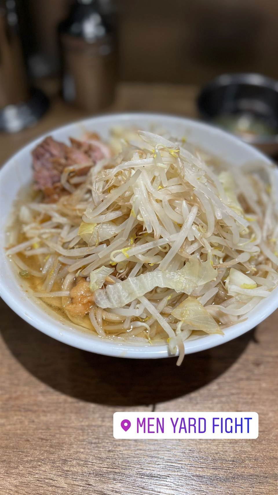
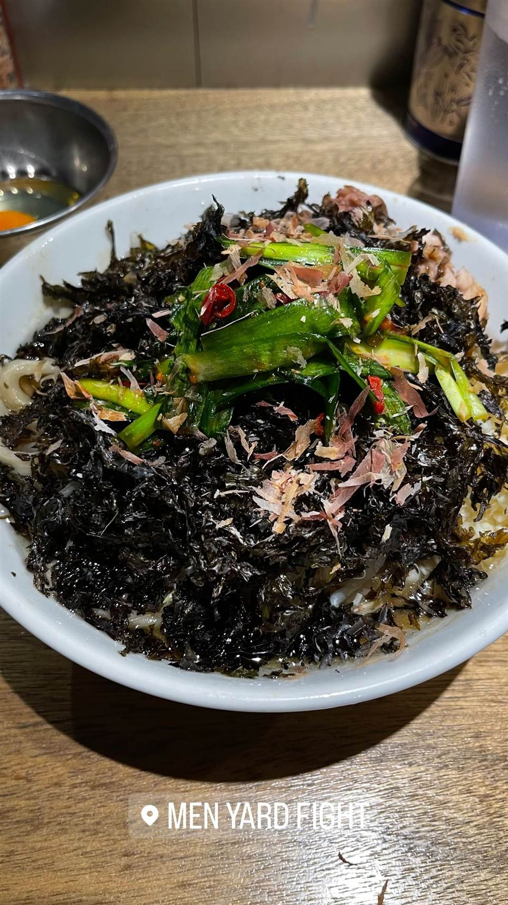

ラーメン · 二郎系(インスパイア) · 反町
★ また行きたい二郎系(インスパイア)で9位
MEN YARD FIGHT
二郎系「蓮爾」登戸店仕込みの縄のように極太な麺
MEN YARD FIGHT
横浜・反町の「MEN YARD FIGHT」は、二郎系の名店「蓮爾」登戸店で修業した店主が2019年10月に開いたインスパイア店。カフェのようなスタイリッシュな外観からは想像できない、縄のように極太でコシの強い麺が持ち味。


TRIVIA
豆知識
- カフェやバーのようなおしゃれな外観だが、中身はガチの二郎系インスパイアという意外性が話題
REVIEWS
世間の評判
94.1ラーメンDB
極太麺と二郎系屈指の濃厚スープ
- 極太麺の食べ応えと二郎系の中でも屈指の濃さのスープを評価する声が多い
- 麺少なめの少なめなど量を細かく調整できる点を評価する人もいる
- サンバルラーメンなど変わり種の限定メニューにも注目が集まっている
ラーメンデータベース 口コミ353件・総合526位・最新 2026-08
| 創業 | 2019年10月、横浜・反町に開業。 |
|---|---|
| 系譜 | 二郎系「蓮爾（登戸店）」で長く修業した店主が独立して開いたインスパイア店。「全盛期の蓮爾登戸店を継承した」と評されている。 |
| 看板 | 二郎系ラーメン、まぜそば |
| こだわり | 縄のように極太で強いコシの麺が最大の特徴。ニンニク・野菜・アブラなどのコール（無料トッピング）に対応。 |
| どこから | 東京から1時間ほど |
| 営業時間 | 月〜金 11:00-15:00、18:00-00:00 土・日 休み |
| 予算 | 夜 ¥1,000～¥1,999 |
| 定休日 | 土日 |
| 場所 | 反町駅 神奈川県横浜市神奈川区反町 |
| メモ | 土日定休。麺量は小270g・並370g・大500gから選択可能。 |
食べたもの：店の看板 / 二郎系ラーメン / のりまぜそば / 二郎系まぜそば / 辛いラーメン / まぜそば
地図で見る店の情報ラーメンDBX（その日の営業）Instagram
NEARBY
近い店・同じ系統の店
-
 ★
二郎系(インスパイア) 新小岩駅
Hi-Fat Noodle BUTCHER'S
「脂と肉を武器にする」がコンセプトの二郎系2号店
昼 ¥1,000～¥1,999 夜 ¥1,000～¥1,999
★
二郎系(インスパイア) 新小岩駅
Hi-Fat Noodle BUTCHER'S
「脂と肉を武器にする」がコンセプトの二郎系2号店
昼 ¥1,000～¥1,999 夜 ¥1,000～¥1,999
-
 ★
二郎系(インスパイア) 高田馬場駅(早稲田口)
ラーメン 池田屋 高田馬場店
京都一乗寺発の二郎系が東京初進出、豚の旨味濃厚な一杯
昼 ¥1,000～¥1,999 夜 ¥1,000～¥1,999
★
二郎系(インスパイア) 高田馬場駅(早稲田口)
ラーメン 池田屋 高田馬場店
京都一乗寺発の二郎系が東京初進出、豚の旨味濃厚な一杯
昼 ¥1,000～¥1,999 夜 ¥1,000～¥1,999
-
 ★
二郎系(インスパイア) 東北沢駅／駒場東大前駅
千里眼（センリガン）
夏季限定の冷やし中華も人気の二郎系インスパイア
昼 ～¥999 夜 ～¥999
★
二郎系(インスパイア) 東北沢駅／駒場東大前駅
千里眼（センリガン）
夏季限定の冷やし中華も人気の二郎系インスパイア
昼 ～¥999 夜 ～¥999
-
 ★
二郎系(インスパイア) 大山
自家製麺 No11
富士丸出身の店主が繰り出す350g極太麺の二郎系
夜 ¥1,000～¥1,999
★
二郎系(インスパイア) 大山
自家製麺 No11
富士丸出身の店主が繰り出す350g極太麺の二郎系
夜 ¥1,000～¥1,999
-
 ★
二郎系(インスパイア) 東大前
ラーメン用心棒 本号
千里眼の系譜を継ぐ、濃厚豚骨醤油と極太麺のまぜそば
昼 ～¥999 夜 ¥1,000～¥1,999
★
二郎系(インスパイア) 東大前
ラーメン用心棒 本号
千里眼の系譜を継ぐ、濃厚豚骨醤油と極太麺のまぜそば
昼 ～¥999 夜 ¥1,000～¥1,999
-
 ★
二郎系(インスパイア) 大井町
ザ・ラーメン スモールアックス
二郎系なのに麺量250gと少なめで食べやすい一杯
昼 ～¥999 夜 ～¥999
★
二郎系(インスパイア) 大井町
ザ・ラーメン スモールアックス
二郎系なのに麺量250gと少なめで食べやすい一杯
昼 ～¥999 夜 ～¥999